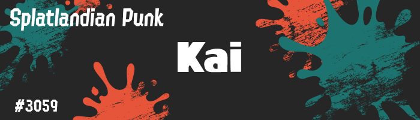

OC Dossier /// Splat-card
Kai
Inkling indépendant·e · Chaos chromatique · Mécano au repos
Ami·e de presque tout Cité-Clabousse, introuvable quand les clients s’impatientent, mais toujours là quand une chasse au trésor promet assez de chaos.
Profil
Inkling punk originaire de Cité-Clabousse et fan inconditionnel·le des Tridenfer, Kai est une présence amusante et sympathique dans la ville du chaos. D’un naturel calme et détendu, iel prend la vie comme elle vient, sans jamais vraiment s’intéresser au lendemain.
Kai ne se prend pas la tête avec des choses futiles comme les “règles” ou les “responsabilités”, valorisant plutôt sa propre liberté et le bonheur des personnes qui l’entourent.
D’un tempérament rusé et espiègle, Kai donne l’impression d’être ami·e avec tout le monde en Cité-Clabousse. Iel tient un petit atelier de réparation avec sa petite sœur, où ils acceptent en réalité n’importe quel job.
Quand Kai ne fait pas la sieste sur le comptoir ou ne joue pas une farce quelque part en ville, iel accompagne sa sœur dans ses diverses chasses au trésor.
- Espèce Inkling
- Pronoms / Orientation Iel / Pan
- Âge 22 ans
- Anniversaire 9 septembre
- Occupation Mécano / Chasseur·se de trésor
- Arme favorite Aérogun premium
Notes
- Les normes de genre ont très peu d’importance pour Kai. Iel aime s’habiller de manière ambiguë, juste pour laisser les gens deviner.
- Quand Kai tient seul·e l’atelier de réparation, les clients se plaignent souvent de ses horaires. Même si le travail finit toujours par être fait, Kai ne suit aucune forme d’organisation : personne ne sait vraiment quand, ni même où, l’atelier sera ouvert.
- La nuit, quand Cité-Clabousse s’endort, Kai aime jouer de la guitare en secret sur les toits. Iel rêve de monter sur scène pour de vrai, un jour.
- Malgré sa popularité, peu de personnes le·a connaissent vraiment intimement. En secret, Kai se sent un peu seul·e, mais préfère se cacher derrière farces légères et sourires.
Archives visuelles